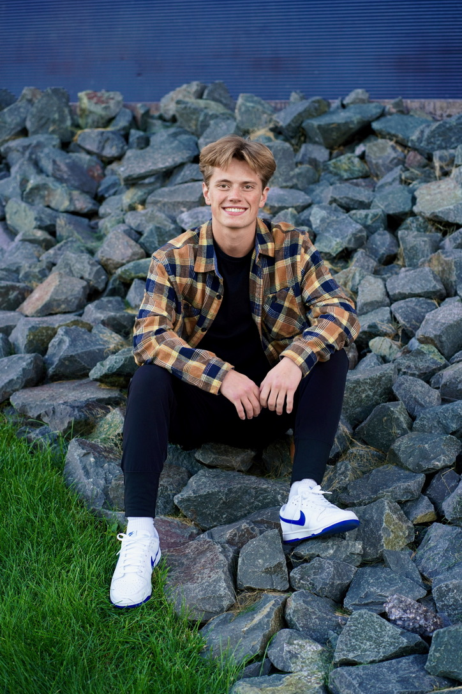

Hi — I'm Max Parker
Marketing specialist • Student athlete • Outdoor enthusiast
I combine practical marketing experience (Red Bull USA) with a passion for outdoor sports and creative storytelling. I build memorable brand experiences that connect with active audiences and create measurable results.

About Me
My name is Max Parker. I am from Eagan, Minnesota, and I am a marketing major at the University of Minnesota Duluth. My journey combines athletic dedication with marketing innovation, creating a unique perspective that bridges outdoor culture with strategic brand development. At UMD, I've found the perfect balance between academic excellence and pursuing my passions in snowboarding and lacrosse.
Snowboarding
Jumping rails, park laps, chasing fresh lines — winter is where strategy meets adrenaline.
Lacrosse
Team-based discipline and quick decision-making on the field — I play at UMD.
Featured photos
A few moments that capture my lifestyle and interests.